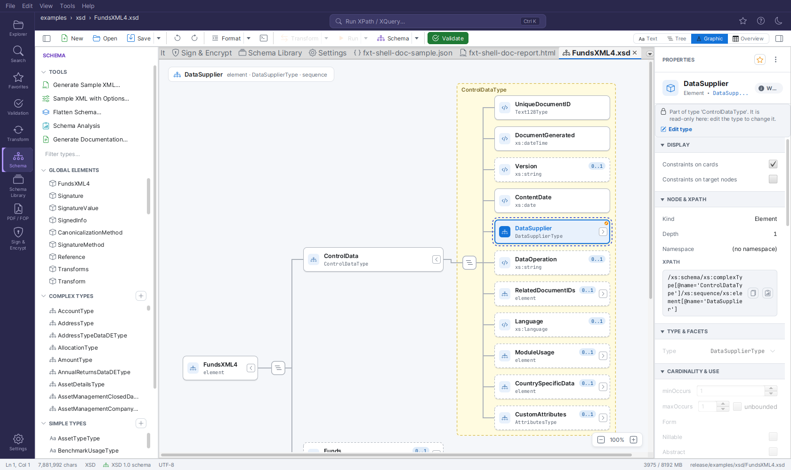
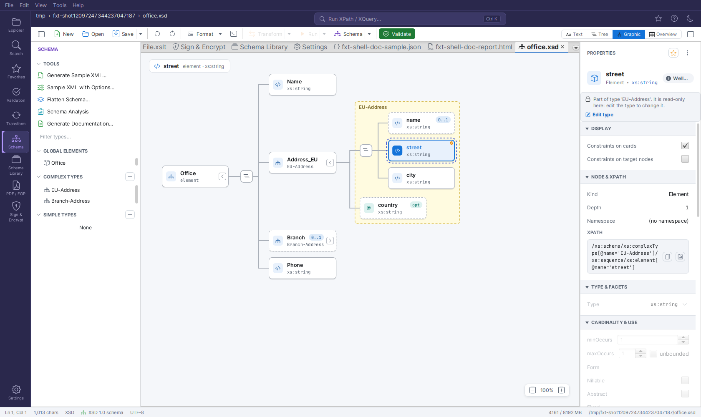

Graphic view¶
The Graphic View lets you explore and edit your schemas visually.


Before you start¶
- An XSD open in the editor; switch to the Graphic view.
Features¶
- Visual Tree: See your XSD as an interactive, hierarchical tree
- Easy Navigation: Click on elements to explore their structure
- Edit Documentation: Add or edit documentation for schema elements using the inline tab-based editor (no modal dialogs)
- Constraints on the Cards: Element and attribute cards list their
key,keyrefanduniqueconstraints and the assertions of their type, including inherited ones - see Constraints on the Cards - Named Types in Frames: The content of a named complex type is drawn in a light-yellow, dashed frame titled with the type's name; it is read-only there and edited in the type's editor - see Named Types in Frames
- Type Picker: Choose an element's or attribute's type from a list of the schema's own types and all XSD built-in datatypes, each explained in a side pane
- Add Examples: Include example values for elements
- Drag and Drop: Move or copy elements, compositors, group references and attributes by dragging their cards - see Moving and Copying by Drag and Drop
- Reorder and Duplicate: Move nodes up and down, copy, cut, paste and duplicate them from the context menu
- Full Undo/Redo: Go back and forward through your changes
- Export: Save the diagram as PNG, SVG or PDF, or copy it as an image (File → Export View…, Edit → Copy View as Image, or right-click the empty canvas) - see Exporting a Graphical View
How to Use¶
- Open your XSD file in the editor host and switch to the Graphic view
- The schema appears as an interactive tree
- Select an element by clicking on it
- Edit properties in the panel on the right (name, type, cardinality/occurrence, use, form, constraints, documentation, and facets)
- Add children using the context menu (right-click)
- Reorder nodes by dragging them to a new place, or with Move Up / Move Down from the context menu; Delete removes the selected node
Editing properties from any view
The same Properties pane is available in the Text view as well as the Graphic and Tree views. See Editing Schema Properties from Any View below.
Reading a Card¶
Every node is a card with two lines: the name and, below it in a monospace font, the
type (xs:string, DataSupplierType) - or the kind of node when it has no type
(element, group). The cards of one sequence, choice or all share the width of the widest one.
| What you see | Meaning |
|---|---|
Symbol </> |
Simple content (a simple type, no children) |
| Symbol of a small tree | Content of its own: a complex type, or an element with children |
Symbol @ |
Attribute |
| Folder symbol | Group or attribute group reference |
| Symbol colour | Kind of node: blue element, teal attribute, green simple type, grey complex type or group |
Pill 0..1, 1..*, 2..5 |
Cardinality; none is shown for the default 1..1 |
Pill req / opt |
Attribute use: required or optional |
| Dashed outline | Optional (minOccurs="0", or an attribute that is not required) |
| A second outline behind the card | Repeats (maxOccurs above 1 or unbounded) |
Button with › / ‹ |
Opens / closes the card; a blue dot means its children load when you open it |
| Small box with lines, signpost or stack | xs:sequence, xs:choice, xs:all; a cardinality other than 1..1 is written below it |
Small blue I in the corner |
The node comes from an included file |
The title chip at the top-left names the selected card (or the diagram's root when nothing is
selected) with its kind, type and content model, e.g. DataSupplier element · DataSupplierType · sequence.
The zoom control at the bottom-right zooms out and in; click the percentage to return to 100 %
(also Ctrl −, Ctrl +, Ctrl 0).
Constraints on the Cards¶
A card lists what limits its node below the type lines, one row per constraint:
| Label | Meaning | Row shows |
|---|---|---|
KEY |
xs:key |
Name and fields |
UNIQ |
xs:unique |
Name and fields |
REF |
xs:keyref |
Name and the key it refers to |
ASSERT |
xs:assert or xs:assertion |
The test, shortened |
An element reference shows the constraints of the global element. Assertions come from the card's type and its base types. A card shows up to four rows, followed by +N more.
Hover over the rows to see every constraint in full: selector, fields, the complete test, and the type it was declared in. To add or delete a constraint, use the CONSTRAINTS section of the Properties pane; it lists what is declared directly on the selected node, so an assertion inherited from a type is changed in that type.
To hide the rows, turn off View → Show Constraints in Diagram. The setting applies to all open diagrams and is remembered.
Constraints on target nodes. A key, unique or keyref is declared on one element but checks
the values of another: its field target. For example, in FundsXML4 the element Fund declares
the key benchmarkID with the selector FundStaticData/Benchmarks/Benchmark and the field
BenchmarkID. Turn on Constraints on target nodes, and the BenchmarkID card also lists
← benchmarkID @ Fund. The row has an outlined label and muted text, so you can tell it apart
from the card's own constraints. An attribute field (@code) shows on the attribute card. A
type used in several places matches only where its path fits the selector. Only fields count,
not the elements the selector picks. The option is off by default.
Both switches are in the DISPLAY section at the top of the Properties pane, which appears for XSD documents, and in the View menu (Show Constraints on Target Nodes). They change open diagrams at once and are remembered.
Named Types in Frames¶
When an element uses a named complex type (<xs:element name="Address_EU" type="EU-Address"/>),
the content it gets from that type is drawn inside a light-yellow frame with a dashed border.
The type's name is the frame's title, top left. Everything inside the
frame belongs to the type, not to the element: the same content appears wherever the type is used.
- The frame is read-only. Renaming, deleting, moving, cutting or pasting a node inside it, and adding new content to the element that holds the frame, are refused with a short explanation. The context menu of such a node starts with Edit Type '…' and greys out the changing actions; Copy Node and Copy XPath stay available. The Properties pane shows "Part of type '…'. It is read-only here" with an Edit type button and disables its editors.
- To change the content, edit the type: double-click the frame title, choose Edit Type '…' in the context menu, or use Edit type in the Properties pane. The type opens in its own Type Editor tab, where its content can be edited. This works inside a Type Editor tab too: a type used there opens in a further Type Editor tab (of the same schema), so nested types can be followed level by level. A type that is already open just has its tab brought to the front.
- The element itself stays editable: its name, cardinality, type and documentation belong to the element's declaration, so they can still be changed on its card.
- Extensions show the base type as a nested frame. For a type defined by
xs:complexContent/xs:extension, the frame of the derived type contains a second frame titled with the base type, holding the inherited content; the extension's own content follows below it. In the type editor of the derived type only the base type's frame is shown (and read-only), its own content is editable. - Anonymous types defined inline in an element are not framed: their content belongs to the element and is edited in place.
Address_EU uses the type EU-Address: its content is drawn in the type's frame. The selected street belongs to the type, so the Properties pane shows it read-only with Edit type. Expanding Branch (which extends EU-Address) shows the base type's frame nested inside the Branch-Address frame.

Tips¶
- Right-click for a context menu with common actions (Add Element… / Add Attribute… with all properties - see Adding an Element or Attribute, Rename…, Change Type…, Change Cardinality…, add/move/delete). Change Type… opens a small dialog with the type picker, pre-filled with the current type - the same dialog as in the Tree view
- Edit the name and every other property in the Properties pane on the right
- Only edits that keep the schema valid are possible; see Only Valid Changes
- Ctrl+Z to undo, Ctrl+Y to redo
- Ctrl+S to save (a backup is created automatically - Settings → Schemas & Validation → XSD lets you turn this off or change the number of kept versions, 3 by default)
- The toolbar's Save ▾ split button saves the schema; its arrow menu offers Save As… (Ctrl+Shift+S, save under a new name) and Save All (saves every open tab)
What the Diagram Shows¶
- Expanding cards. Click a card's expand button to open it. In a large schema the diagram builds the first few thousand cards up front; the rest loads when you open the card that holds it. Simple types and built-in types have no content to open, so they have no expand button.
- Inherited content. A type built with
xs:extensionalso shows the content of its base type. A type built withxs:restrictionshows its own elements, because a restriction restates the content model, plus the attributes of its base type, except those it redeclares or prohibits. - Wildcards.
xs:anyandxs:anyAttributeappear as cards namedanyandanyAttribute, with the allowed namespace and the validation mode. Their right-click menu offers Delete and Copy XPath. - Redefined files. The file named by
xs:redefineorxs:overrideis loaded, and its global elements appear like those of an include. Its definitions are shown in their changed form: a redefined type builds on the original, an overridden one replaces it. They are read-only, and saving leaves the file and yourxs:redefineas they are. - Group references.
xs:groupandxs:attributeGroupreferences appear as their own cards, labelledgroup: NameandattributeGroup: Name. Attribute group cards stay closed until you open them. The right-click menu of these cards offers only Delete and Copy XPath: Delete removes the reference, not the shared definition. - Placeholder cards. When the diagram cannot show something, a card names it, and it has no
right-click actions:
Unresolved type: X,Unresolved group: X,Unresolved attribute group: X: the definition was not found, often because it is in a file that could not be loaded.External: ...: a referenced element was not found. It usually belongs to another namespace whose schema is not loaded.
- Files changed on disk. The schema's own file and every local file it pulls in are watched:
includes at any depth, imports and the targets of
xs:redefine/xs:override. When such a file changes, is deleted or appears, one question names the files for each schema tab. A file with a new date but the same content asks nothing. Reload rebuilds the schema from the current editor text, so unsaved text stays, but the undo history of diagram edits is cleared. Ignore keeps the current view until the file changes again. Open and closed cards, zoom and scroll position survive any rebuild. An XML document watches the schema bound to it the same way, also without a tab for that schema. Its schema facts and IntelliSense then refresh without asking, because the document stays as it is. -
Warning bar for missing schemas. A bar above the diagram names the includes and imports that could not be loaded, also those inside imported schemas and nested includes. Circular includes are not failures. Dismiss hides the bar until the set of failures changes. A schema you have not saved yet has no file location, so it cannot resolve its includes: save it first.

For what the diagram leaves out, see Supported XSD Features.
Moving and Copying by Drag and Drop¶
In the Graphic view you can rearrange the schema by dragging its cards: elements, compositors (sequence, choice, all), group references and attributes.
- Press the left mouse button on a card and move the mouse a few pixels - the drag starts. While you drag a card, the diagram does not pan (dragging on empty space still pans it).
- Point at the target and watch the feedback:
- A blue line above or below a card: the node is dropped before or after that card (point at the upper or lower quarter of the card).
- A green frame around a card: the node is dropped into it (point at the middle). Elements go into the card's sequence, choice or all; attributes go into its complex type. Sequence, choice and all symbols only accept drops into them.
- A red frame: the drop would not produce a valid schema. If you release there, a message explains why and nothing changes.
- Release the mouse button to move the node. Hold Ctrl (Cmd on macOS) while releasing
to copy it instead. The copy keeps its name, or gets the suffix
_copyif a sibling already has that name.
More details:
- Near the edge of the visible area the diagram scrolls automatically.
- Press Esc to cancel the drag.
- Named types are read-only in their frames. Dropping into an element whose content comes from a named complex type, next to a node inside such a frame, or moving a node out of it is refused - edit the type in its type editor instead. Copying a node out of a frame (Ctrl) is allowed.
- Shared definitions ask first. Dropping into or out of a named global group, or into a named type in its type editor, that is used by more than one declaration changes every place that uses it. A confirmation dialog tells you how often the definition is used ("This changes a shared definition … used N times").
- Not possible (shown with a red frame):
- moving a global declaration into a content model - use a reference (
ref) instead - moving a local declaration to the top level of the schema
- dropping attributes among elements, or elements among attributes
- dropping into an element with a simple type (such as
xs:string) - changing nodes that come from an imported schema
- changing the content of a named type inside its frame (see above)
- moving a global declaration into a content model - use a reference (
- Every drop is one undo step - Ctrl+Z reverts it. The Text view shows the change right away.
- As an alternative without the mouse, use Move Up / Move Down from the context menu.
Adding an Element or Attribute¶
Add Element…, Add Root Element and Add Attribute… (right-click in the Graphic or Tree view) open one dialog in which you set the new node's properties right away. You do not have to fill them in afterwards in the Properties pane.
- Name: pre-filled and selected, so you can type over it.
- Type: the type picker with built-in types and the schema's own types. Leave it empty for no type. Attributes are offered simple types only.
- Occurs (elements): min, max and unbounded. A top-level element has no cardinality, so the row is hidden for Add Root Element.
- Use (attributes): optional, required or prohibited.
- Documentation: written as
xs:annotation/xs:documentation. - More (collapsed): Default or Fixed value, Form (qualified / unqualified / schema default), nillable, and for top-level elements abstract and Substitution group.
The input is checked while you type. A red note names the problem and OK does nothing until it is fixed. For example, the name must be a valid XML name, min may not be greater than max, a node cannot have both a default and a fixed value, and an attribute with a default must be optional. The new node is added with all its properties as one undo step.
Only Valid Changes¶
The graphical editor only lets you make changes that keep the schema valid XML Schema. This applies to the Properties pane, the right-click menus of the Graphic and Tree views, Paste and drag & drop alike.
- Menu entries that cannot apply are disabled. An element with a simple type such as
xs:intcannot contain child elements or attributes, so Add Element…, Add Container Element… and Add Attribute… are greyed out for it. An element reference (ref="…") takes its type and content from the referenced element, so its Type field and Change Type… are locked. Child elements need a Sequence, Choice or All first. - A change that would replace existing content asks first. Setting a type on an element that defines its own content (an inline complex type, for example a sequence with child elements) would leave both in the schema. Instead a dialog explains what would be lost and offers Replace with xs:int. Confirming removes the inline content and sets the type. Cancel keeps the schema unchanged. Adding a Sequence, Choice or All to an element that has a type works the same way: the dialog offers Remove type and add sequence.
- Everything is one undo step. Ctrl+Z brings back the inline content or the type you replaced.
- Switching a compositor keeps its children. Changing a Sequence into a Choice or All moves the
child elements over. An All is refused when it would hold a nested Sequence or Choice, or, in
an XSD 1.0 schema, an element with
maxOccursgreater than 1. - Attributes land in the right place. For an element whose type is a named complex type, a new
attribute is added to that type. For a complex type with simple content it goes into the
xs:extension.
When an edit is not possible, a short message says why.
Automatic Resolution of Imported Schemas¶
Some schemas import other schemas that are not shipped alongside them. For example, many financial schemas contain:
<xs:import namespace="http://www.w3.org/2000/09/xmldsig#"
schemaLocation="xmldsig-core-schema.xsd"/>
If xmldsig-core-schema.xsd is not next to your schema, FreeXmlToolkit resolves the
import automatically, trying these sources in order:
- Next to the declaring file - a relative
schemaLocationis resolved against the folder of the schema that declares the import (also for imports declared inside an imported or included file). - The Schema Library - your own mappings, registered XML catalogs and the bundled standards, matched by the declared location (system ID) first and then by the import's namespace. A hit here loads without any network access.
- The schema cache - a previously downloaded copy under
~/.freeXmlToolkit/cache/schemas/, again without network access. - The declared URL - an
http(s)schemaLocationis downloaded (following redirects, using your proxy settings). - The namespace URL - as a last resort the schema is fetched from the import's namespace URL, which is how the W3C hosts the XML signature schema, for instance.
Downloaded content is verified to be a real XML Schema, then stored in the cache and saved
next to the schema that references it, under its original name - for the example above as
xmldsig-core-schema.xsd in your schema's folder. From then on that file is used: it is what
Schema Analysis shows as Resolved path, what Open Referenced File opens, and it works
offline. A relative location keeps its folder layout (../common/types.xsd lands one folder
up, in common); an absolute http(s) location is saved under its file name next to the
referencing schema (http://www.w3.org/2001/xml.xsd → xml.xsd), and the schemaLocation
in your schema stays as it is. Imports are resolved transitively: an imported schema's own
xs:import and xs:include declarations (and imports declared inside an included file)
are followed too, with circular imports detected and a nesting depth cap of 10.
A few things to know:
- Your files are never overwritten. A downloaded schema is only saved next to your schema when no file of that name exists there yet; the referencing schema itself is never rewritten. If the folder is not writable (or the schema has not been saved yet), the cached copy is used as before. This applies everywhere imports and includes are resolved: the schema views, validation, the Type Library, Schema Analysis, flattening, sample validation and documentation generation.
- Only imports whose namespace is an
http://orhttps://URL are looked up by namespace (step 5). xs:includereferences are resolved relative to the including file, or through an XML catalog / Schema Library entry for their location - they are not looked up by namespace.- If an include or import still cannot be loaded, the Graphic view names it in a bar above the diagram.
- Internal and private network addresses are never contacted - see Security Features.
- Clearing the cache (Settings → Files & Cache → TEMP & CACHE, or the Schema Library's Cache tab) is safe: the copies next to your schemas stay, and anything else is re-downloaded the next time it is needed.
- Advanced:
-Dfxt.schema.localCopies=falsekeeps downloaded schemas in the cache only. - Advanced: to turn remote downloads off entirely (for example in fully offline
environments), start the application with the system property
-Dfxt.schema.namespaceFallback=false- local files, catalog hits and already-cached copies still resolve.
Next steps¶
- Overview view - all top-level components in one table
- Types
- Properties Inspector